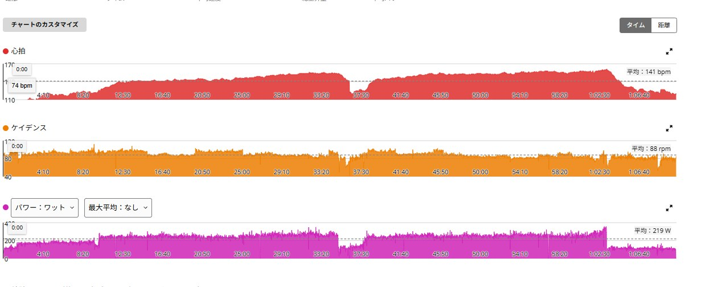
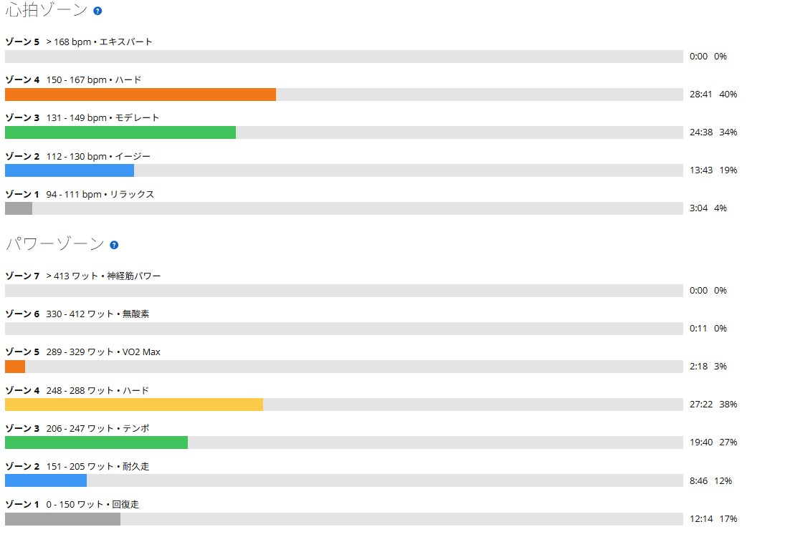

調子が良すぎて逆に不安。SST25分×2を249W・254Wで完遂した日
4本ローラーでSST25分×2をやった。1本目は249W、2本目は254W。いつものように2本目で崩れるどころか、後半の方が5W高かった。
今日は最初から体が軽かった。素直に喜べばいいのに、調子が良いと「次はダメになるのでは」と余計な心配まで始める。まだ次のローラーにも乗っていないのに気が早い。

今日は最初から体が軽かった
アップの段階から体が軽く、脚も自然に回った。前日の友人ライドは低強度で終えている。疲労を増やさず動いたことが、ちょうど良い回復になった可能性はある。
ただし「昨日軽く走ったから好調だった」と決めるには材料が足りない。体調、回復、暑さへの慣れ、ローラーで長く踏むことへの慣れ。そのあたりがうまく重なった日として見ておく。
1本目249W、2本目254W
1本目は25分を平均249Wで完遂した。無理に上げず一定で入り、最後まで大きく崩れなかった。75kg基準では3.32W/kgになる。
途中でトイレへ行ったためGarminのラップ上はレスト3分だが、実際にはタイマーを止めて約5分休んでいる。2本目は25分を平均254W。平均心拍は上がったものの、出力は1本目より5W高く終えられた。
初代Aresへ戻した影響はあるのか
外用シューズを初代S-Works AresからS-Works Ares 2へ替えたため、これまで外で使っていた初代Aresをローラー用に回した。ローラーではそれまでS-WORKS 7を使っていた。初代Aresは長く使っていて、BOAをどこまで締めればいいかも足のどこへ圧がかかるかも分かっている。
S-WORKS 7から慣れた初代Aresへ替えたことで、集中しやすかった可能性はある。ただ、シューズを替えただけで5W伸びたとまでは言えない。今日は快適に回すための小さな要素の一つだった。

好調の理由を一つに決めない
前回の暑い室内でのSSTでは2本目が大きく崩れた。今回は同じように室温が高い中でも最後まで回せた。暑さへの慣れや25分という長さへの慣れが、少しずつ進んでいるのかもしれない。
それでも好調の理由を一つに決めるのは早い。前日の負荷、睡眠、食事、体調、シューズの感触まで全部が混ざっている。分かったのは「今日は249Wと254Wで25分を2本できた」という事実だけ。それで十分である。
調子が良いと次が怖くなる
悪い日は理由を探し、良い日は「次もできるだろうか」と心配する。どちらにしても脳は静かにしてくれない。今回は2本目を254Wで終えた直後から、次回これを下回ったらどうしようと考えていた。
でも254Wは今日の上限寄りの結果であって、毎回の最低ラインではない。当面は242〜250Wあたりで25分×2を安定させる。次に数字が落ちても、今日できたことまで消えるわけではない。
今回やってみて思ったこと
25分×2を249Wと254Wで揃えられたのは素直にうれしい。しかも2本目の方が高かった。室内で長く踏み続ける力は、少しずつ伸びていると思う。
次回も同じ数字になるとは限らない。だから今日の好調を新しい義務にはしない。良い日は良い日として記録し、悪い日はまた原因を考える。そのくらいで続けた方が長持ちしそうだ。

自分用メモ
- メニューSST25分×2 / 実質レスト5分
- 結果1本目249W / 2本目254W
- 全体1時間11分 / 平均219W / NP235W / IF0.854 / TSS85.2
- 心拍平均141bpm / 最大161bpm
- 基準FTP275W / 75kg基準で3.32W/kg・3.39W/kg
- 次回242〜250Wで25分×2を安定させる